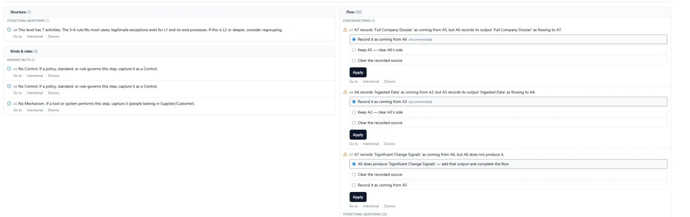
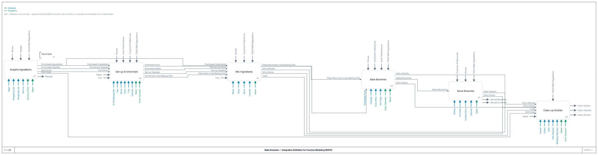
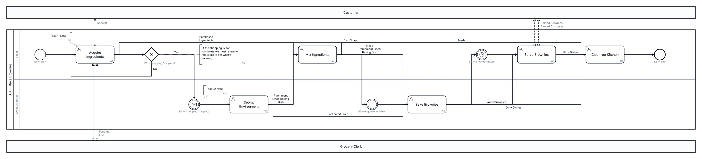
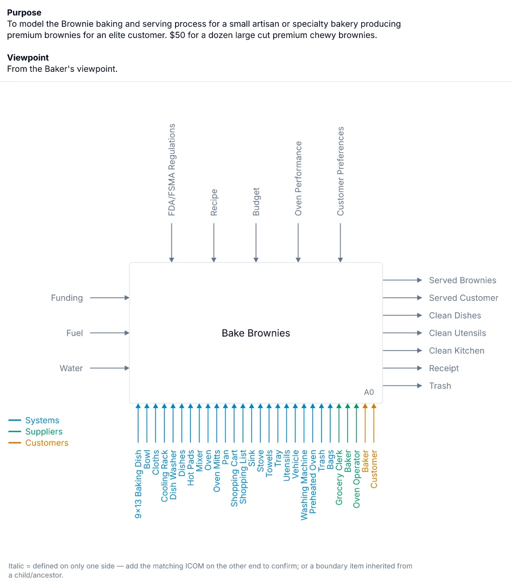

Forester
Process modeling software · product, not publicly launched
2025 – present
- Situation
- Process models drive redesigns and cost cases, but most are drawn by hand as pictures.
- Obstacle
- Hand-drawn models are usually wrong and nobody can tell: two people describe the same handoff differently, inputs appear from nowhere, and at scale no reviewer can hold the whole graph in mind.
- Action
- Built software that captures a process as data, using my decomposition and ICOM method, and draws every diagram from it. A Coach finds contradictions across the model, ranks the fixes, and can complete a missing flow in one click.
- Result
- One model produces 6 diagram languages and 35 metrics across 6 stakeholder lenses. Phase 1 is feature-complete and in use on a live client engagement.
- 18
- Sprints shipped, built solo with AI
- 6
- Diagram languages from one model: IDEF0, BPMN 2.0, VSM, SIPOC, Context, FDPM
- 35
- Metrics across 6 stakeholder lenses, computed rather than hand-summed

A tool that finds nothing proves nothing. This is what working looks like.






Not publicly launched; the product name is not final.